|  |
Juan Luis Vázquez Suárez
Académico numerario de la
Real Academia de Ciencias Exactas, Físicas y Naturales
La Medalla Echegaray es el galardón científico más alto concedido por la Real Academia de Ciencias Exactas, Físicas y Naturales de España (RAC). Fue instituido a instancias de D. Santiago Ramón y Cajal en 1905, tras la concesión del Premio Nobel a D. José Echegaray. Desde la corporación, se reconoce con la medalla una eminente trayectoria investigadora o una contribución científica de especial relevancia.
La medalla correspondiente al año 2022 fue concedida en sesión plenaria de la RAC el día 21 de diciembre de 2022 a nuestro compañero José Antonio Carrillo de la Plata, doctor por la Universidad de Granada y hoy día Full Professor de la Universidad de Oxford. La RAC otorga este reconocimiento cada dos años y es el galardón científico más antiguo reconocido en España.
José Antonio Carrillo de la Plata había sido nombrado previamente Académico Extranjero de la RAC. Es doctor por la Universidad de Granada en 1996 y desarrolla su carrera en el campo de las ecuaciones diferenciales de la física, en particular en las ecuaciones de difusión no lineal, las ecuaciones cinéticas y el cálculo de variaciones. Destaca su notable dominio de técnicas novedosas y delicadas del análisis, motivadas en la física y las probabilidades. Desde 2004, ha sido sucesivamente profesor ICREA en Barcelona y desde 2012 fue profesor del Imperial College de Londres hasta 2020. En los últimos años, sus contribuciones han sido fundamentales en ámbitos como la biología matemática, en sus vertientes teórica y computacional. Estos trabajos y su creciente renombre internacional, así como el extenso magisterio doctoral, le han promovido a la cátedra del Mathematical Institute de la Universidad de Oxford en Reino Unido, en 2020.
La Solemne Sesión de Entrega de la Medalla Echegaray 2022, celebrada el 27 de septiembre de 2023, fue grabada y puede visualizarse en el siguiente enlace https://www.youtube.com/watch?v=DmIaGhfmgas. La laudatio del profesor Carrillo de la Plata fue realizado por el profesor Juan Luis Vázquez y puede leerse en el siguiente enlace (pulse aquí). El discurso del profesor Carrillo puede leerse en este otro enlace (pulse aquí)
En la propuesta de concesión, se destaca la calidad de la obra científica del profesor Carrillo en matemática pura que abarca desde las Ecuaciones en Derivadas Parciales y campos afines hasta diversas ramas de la ciencia aplicada. Sus investigaciones le han llevado a la obtención de diversos premios de relieve. La concesión de esta medalla responde a que José Antonio Carrillo es ya una referencia mundial en sus campos de estudio, con gran presencia en eventos o congresos, como la International Conference for Industrial and Applied Mathematics (ICIAM) 2023, celebrada a nivel mundial, y en instituciones europeas (European Mathemathics Society, European Academy of Sciences, Section Mathematics). Muy recientemente, J. A. Carrillo ha sido artífice para establecer núcleos de actividad matemática en España como el centro asociado BIRS - IMAG de la Universidad de Granada que acaba de entrar en funcionamiento en mayo pasado con una serie de conferencias internacionales del máximo nivel.
La RAC espera que, animado por este reconocimiento, el profesor Carrillo extienda su magisterio a las nuevas generaciones para conducir la investigación futura por la difícil combinación de la alta exigencia intelectual de la matemática pura con su aplicación a los retos de la ciencia, la tecnología y más en general la sociedad del siglo XXI, esfuerzo de compenetración que tantos éxitos está cosechando gracias a las mentes más brillantes de nuestra profesión. Tal esfuerzo debería revertir en el progreso de la ciencia y en la resolución racional de problemas cruciales de la sociedad, en consonancia con las ideas progresistas expuestas hace más de un siglo por D. Santiago Ramón y Cajal y D. José Echegaray.
| Juan Luis Vázquez, |
| Académico numerario de la RAC |
| Madrid, 2 diciembre 2023 |
El pasado 22 de septiembre se fallaron los Premios Nacionales de Investigación, dotados con 30.000 euros para cada modalidad y que distinguen a aquellas personas investigadoras de España que destacan por su trayectoria y relevancia internacional en sus respectivas áreas de investigación. También reconocen el mérito de jóvenes —con edad máxima de 40 años— que hayan alcanzado logros relevantes en las primeras etapas de sus carreras.
En el área de Matemáticas y Tecnologías de la Información y las Comunicaciones, el Premio Nacional de Investigación Julio Rey Pastor se ha concedido a nuestro colega, y socio de la SEMA, Diego Córdoba Gazolaz por la originalidad y el impacto de sus investigaciones y métodos introducidos en el área de las ecuaciones de la mecánica de fluidos, así como su extraordinaria labor formativa.
El Premio Nacional de Investigación para Jóvenes María Andresa Casamayor, en el área de Matemáticas y Tecnologías de la Información y las Comunicaciones, se ha concedido a Xavier Ros Otón por el desarrollo de técnicas nuevas y fundamentales en el área de las ecuaciones en derivadas parciales, entre las que destacan su estudio de los problemas de frontera libre que modelan la transición entre distintos estados de la materia.
Nuestra enhorabuena a Diego y Xavier por este merecido reconocimiento.
Jesús Ildefonso Díaz Díaz
Universidad Complutense de Madrid
_
Ayer se hizo pública la asignación del Steele Prize for Lifetime Achievement de 2024, de la American Mathematical Society (AMS), dotado con 10.000 dólares a Haïm Brezis (1944-) por sus destacadas y fundamentales contribuciones en varios campos del análisis funcional no lineal y las ecuaciones en derivadas parciales, y por su notable influencia en las matemáticas, en particular a través de su excepcional formación de estudiantes de doctorado.
En la lista de sus 58 alumnos de doctorado que se puede encontrar en https://www.mathgenealogy.org/id.php?id=39923&fChrono=1, aparece en séptimo lugar J. I. Díaz (tesis en 1976) y más adelante aparecen también otros españoles: J. Hernández (1977), J. L. Vázquez (1979), M. A. Herrero (1979), J. Carrillo Menéndez (1981) y M. Escobedo (1988). Además, Brezis mantuvo un estrecho contacto con otros especialistas españoles como G. Díaz, F. Bernis, S. J. Álvarez, X. Cabré y D. Gómez-Castro, entre otros muchos.
La lista de méritos y distinciones de Haïm Brezis es muy extensa como para ser reproducida aquí. Señalemos tan solo que fue elegido Académico Extranjero de la Real Academia de Ciencias de España en el 2002: el mismo año que fue nombrado Doctor Honoris Causa por la UAM.
Uno de sus libros (Análisis Funcional Aplicado: teoría y aplicaciones, Alianza Universidad, Madrid, 1983) ha sido libro de texto en numerosas universidades españolas, e hispano-americanas, por muchos años y ha tenido una gran influencia en muchas generaciones de matemáticos de todo el mundo.
El Steele Prize for Lifetime Achievement, de la AMS, fue instaurado en 1993 y en años anteriores ha sido otorgado a muchos de los mejores matemáticos de universidades norteamericanas (desde su jubilación en la Université de Paris VI, a la actualidad, H. Brezis es profesor de la Rutgers University: de hecho, fue vicepresidente de la American Mathematical Society). Por citar tan solo dos de esos galardonados mencionaremos los Premios Abel L. Caffarelli (2009) y L. Nirenberg (1994).
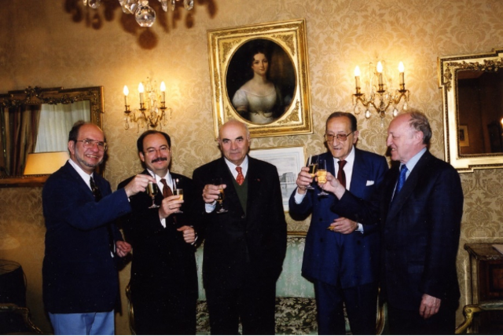
Su estrecha relación con España se tradujo en repetidas actuaciones de enorme valor en la vida de la matemática española, como fue su repetida participación como autor (y miembro del Comité Editorial) de la revista RACSAM, desde su fundación en 2001, la firma del acuerdo entre la Real Academia de Ciencias de España y la Académie des Sciences de Francia el 12 de junio de 2001 (el primer acuerdo bilateral en la historia de ambas academias) y la organización (junto a J. I. Díaz) del Congreso Franco-Español sobre Matemáticas y Medio Ambiente, en Paris, los días 23 y 24 de mayo de 2001 (cuyas actas fueron publicadas íntegramente en RACSAM volumen 96, número 3 de 2002).
Dentro la última Asamblea General Ordinaria de la SEMA, celebrada el pasado 4 de julio en Barcelona, tuvieron lugar las elecciones a miembros del consejo ejecutivo de la SEMA. Como resultado, las profesoras Virginia Selgas Buznego, de la Universidad de Oviedo, y María González Taboada, de la Universidades da Coruña, han sido elegidas como nuevas miembros del consejo ejecutivo.
Virginia Selgas Buznego se doctoró en la Universidad de Oviedo bajo la dirección del profesor Salim Meddahi con un estudio numérico de las ecuaciones de Maxwell cuasiestáticas. Ha trabajado como profesora en las Universidades de A Coruña y de Oviedo, y actualmente es TU en esta última.
Sus primeras actividades de investigación se centraron en el análisis de combinaciones de elementos finitos y elementos de contorno para problemas de dispersión acústica y para problemas de electromagnetismo. Posteriormente, su investigación se ha redirigido principalmente al estudio de métodos cualitativos para problemas inversos de dispersión acústica y electromagnética, centrándose especialmente en el estudio del método LSM. No obstante, ha continuado estudiando métodos numéricos para problemas directos de dispersión, en particular con elementos finitos DG tipo Trefftz o con elementos de contorno tipo CQ-BEM; también ha abordado otros temas, entre los que destacan el análisis de problemas de difusión cruzada en dinámica de poblaciones.
Se pueden encontrar más detalles de su actividad docente e investigadora en https://virginiaselgas.com.
María González Taboada es licenciada y doctora en Matemáticas por la Universidad de Oviedo, con Premio Extraordinario de Licenciatura y de Doctorado. Al finalizar su tesis doctoral, se incorporó a la Universidad de Castilla-La Mancha para trabajar en un proyecto del V Programa Marco UE liderado por el Profesor Antonio Conejo. Posteriormente, ganó una plaza como profesora asociada en el Departamento de Matemáticas de la Universidade da Coruña, donde es Profesora Titular de Universidad desde 2003. Su labor docente ha estado vinculada principalmente a la Facultad de Informática de la Universidade da Coruña, donde imparte actualmente docencia en los Grados en Ingeniería Informática, Inteligencia Artificial, y Ciencia e Ingeniería de Datos. Además, forma parte de la Comisión de Formación del Centro de Investigación en Tecnologías de la Información y las Comunicaciones (CITIC), y tiene reconocidos cuatro tramos docentes (quinquenios) y cuatro tramos de investigación (sexenios).
Su actividad investigadora se ha centrado en el análisis numérico de problemas modelados por ecuaciones en derivadas parciales. En particular, analizó el efecto de la integración numérica en los métodos simétricos de acoplamiento de elementos finitos y elementos de contorno. A raíz de una estancia posdoctoral en la Universidad de Concepción (Chile) con el Profesor Gabriel N. Gatica, comenzó a trabajar en el análisis numérico de métodos de elementos finitos mixtos en mecánica de fluidos y elasticidad, con especial énfasis en el análisis del error a posteriori. Actualmente, su línea de investigación es la simulación numérica de flujos en medios porosos y poroelásticos.
En 2008, recibió el Premio SEMA al Joven Investigador. Ha sido invitada en centros de prestigio internacional, como el Laboratorio Jacques-Louis Lions, de la Sorbonne-Université, y el Basque Center for Applied Mathematics (BCAM), y mantiene colaboraciones regulares con investigadores reconocidos internacionalmente. Ha impartido varias charlas plenarias y participado en minisimposios en congresos internacionales y nacionales. También ha participado en la organización de algunas actividades de carácter científico, y preside el Comité Organizador de la próxima BAIL Conference, que se celebrará en A Coruña del 10 al 14 de junio de 2024.
En https://sites.google.com/view/mariagonzaleztaboada/home se pueden encontrar más detalles de su actividad docente e investigadora.
Sevilla, Spain, June 12-16, 2023
https://departamento.us.es/edan/USSPDE23/
M.A. Rodríguez Bellido and D. A. de Souza
Dpto. Ecuaciones Diferenciales y Análisis Numérico, Universidad de Sevilla
Last June at the Institute of Mathematics of the University of Seville (IMUS) took place the Ulysseus Spring School in PDEs - USSPDE, a mathematical meeting, in the spirit of the Ulysseus consortium, aimed at bringing together researchers and students from some of the Ulysseus partner Universities. The main objective of the meeting was to share present recent research obtained by mathematicians from Ulysseus partner Universities, especially from the Université Côte d’Azur (Laboratoire Jean Alexandre Dieudonné- LJAD) and the Universidad of Sevilla (Departamento de Ecuaciones Diferenciales y Análisis Numérico - EDAN, Instituto de Matemáticas de la Universidad de Sevilla - IMUS), in a pleasant atmosphere that we hope will help to strengthen the ties of collaboration and cooperation of the Ulysseus community and its partners.
The USSPDE programme included:
three mini-courses
nine plenary lectures
roundtable about cooperation, opportunities and future collaborations
poster session for doctoral and master students
The Opening ceremony of the Ulysseus Spring School in PDEs has been attended and addressed by:
Julián Martínez, Vice-Chancellor for Research of the Universidad de Sevilla
Justo Puerto Albandoz, Head of the Instituto de Matemáticas de la Universidad de Sevilla
Antonio Suárez Fernández, Head of the Departamento de Ecuaciones Diferenciales y Análisis Numérico (US)
Yves D’Angelo, Head of the Laboratoire Jean Alexandre Dieudonné (UCA)
Enrique Fernández-Cara, Chairman of USSPDE’s organising committee
María Ángeles Rodríguez Bellido, Vice-President of the Sociedad Española de Matemática Aplicada - SeMA.
The USSPDE’s program included three three-hours mini-courses and nine one-hour plenary talks were held (main pictures can be seen in Figure 6 and 7):
Mini-course 1: Optimal design through the homogenization theory. Delivered by Profs. Faustino Maestre and Juan Casado Díaz (Universidad de Sevilla)
Mini-course 2: Introduction to nonlinear dispersive equations. Delivered by Simona Rota-Nodari (Université Côte d’Azur)
Mini-course 3: Mathematical modelling and numerical analysis in chemotaxis. Delivered by Profs. Francisco Guillén González and María Ángeles Rodríguez Bellido (Universidad de Sevilla)
Talk 1: DREAMS : an interdisciplinary project. Dynamics of Random ExpAnding MultiScale networks. Delivered by Prof. Yves D’Angelo (Université Côte d’Azur)
Talk 2: Fisher/KPP models with memory for fungal growth and their numerical simulation. Delivered by Prof. Laurent Monasse (Université Côte d’Azur)
Talk 3: Optimisation of Sturm-Liouville determinants. Delivered by Prof. Jean-Baptiste Caillau (Université Côte d’Azur)
Talk 4: Structural stability of infinite-dimensional dynamical systems. Some applications to real phenomena. Delivered by Prof. José Antonio Langa Rosado (Universidad de Sevilla)
Talk 5: Full discretization and regularization for the Calderón problem (Università di Genova). Delivered by Prof. Alessandro Felisi (University of Genova)
Talk 6: Nonlocal and Interface problems. Delivered by Prof. Cristian Morales Rodrigo (Universidad de Sevilla)
Talk 7: Fractional BV spaces for hyperbolic conservation laws. Delivered by Prof. Stéphane Junca (Université Côte d’Azur)
Talk 8: An overview on Reduced Order for Large Eddy Simulation turbulence models. Delivered by Prof. Enrique Delgado Ávila (Universidad de Sevilla)
Talk 9: On theoretical and numerical control and inverse problems. Delivered by Prof. Enrique Fernández Cara (Universidad de Sevilla)

(a)
Yves
D’Angelo |
| 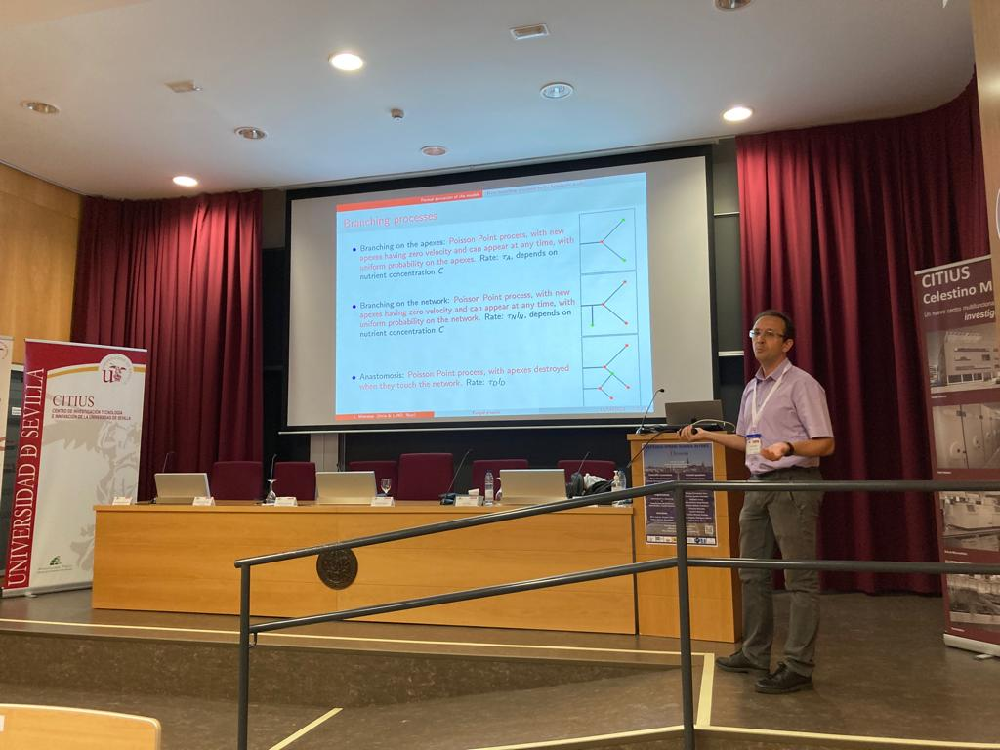
(b)
Laurent
Monasse |

(c)
Jean-Baptiste
Caillau |

(d)
José
Antonio
Langa
Rosado |

(e)
Alessandro
Felisi |

(f)
Cristian
Morales
Rodrigo |

(g)
Stéphane
Junca |
| 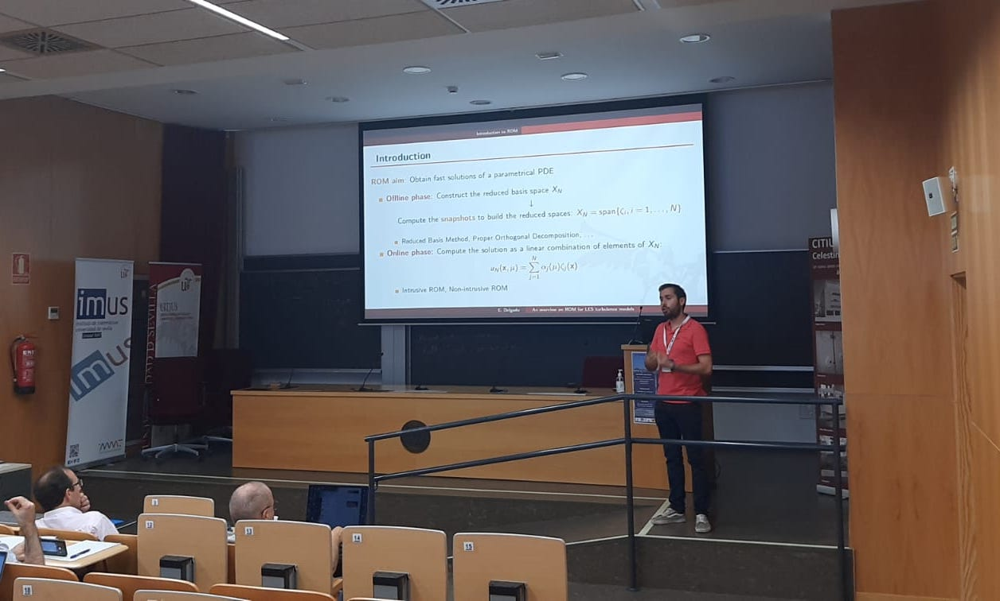
(h)
Enrique
Delgado
Ávila |
| 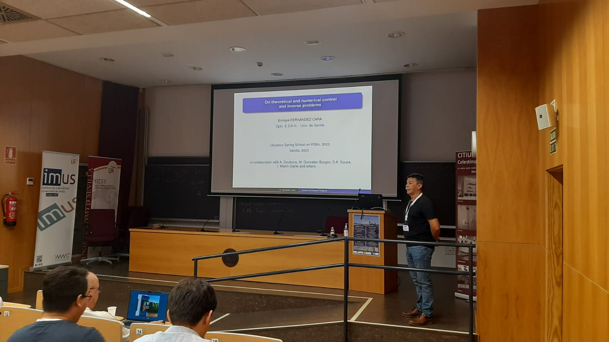
(i)
Enrique
Fernández
Cara |
One important part were the roundtable on cooperation, opportunities and future collaborations.
The main aim of the roundtable was to present some possibilities of cooperation, opportunities and future collaborations between students/researchers of partner universities in the frame of European University Ulysseus. The members of the roundtable were Profs. Carmen Vargas Macías (Vice-Chancellor of Proyección Institucional e Internacionalización of Universidad de Sevilla), Justo Puerto Albandoz (Head of the Instituto de Matemáticas de la Universidad de Sevilla), Antonio Suarez Fernández (Head of the Departamento de Ecuaciones Diferenciales y Análisis Numérico, Universidad de Sevilla) and Yves D’Angelo (Head of Laboratoire Jean Alexandre Dieudonné, Université Côte d’Azur).
PhD researchers presented their current work in the Poster’s session (see Figure 9).
| 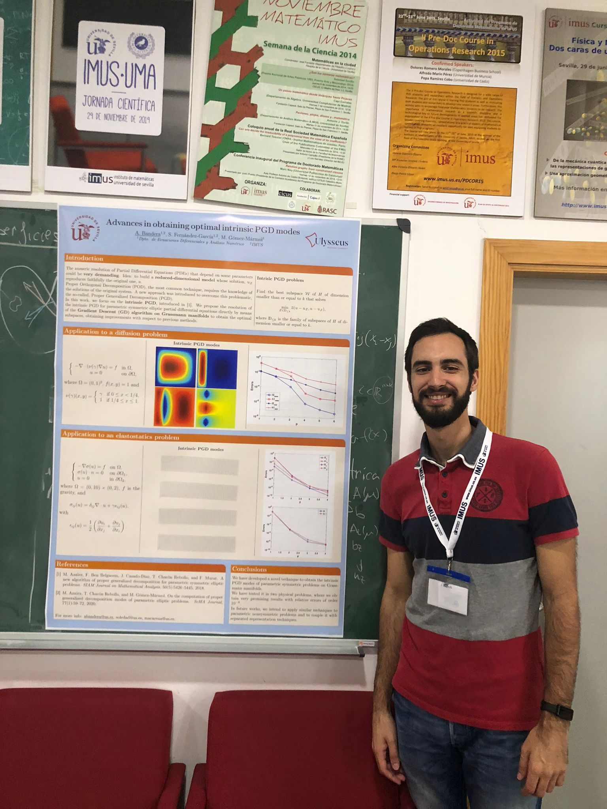
(a)
A.
Bandera |

(b)
Y.
Carranza |

(c)
J.
García-Fuentes |
| 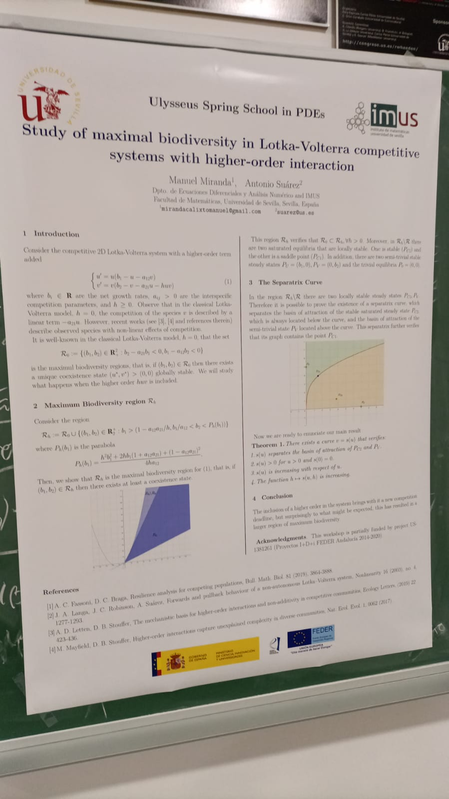
(d)
M.
Miranda |

(e)
V.
Ramos |

(f)
R.
Carlos |

(g)
Poster
Session |
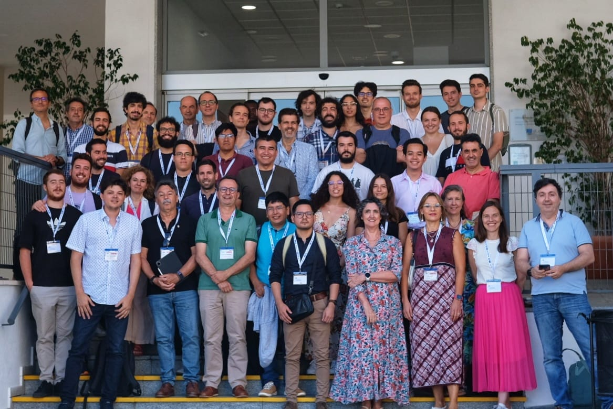
The organizing committee of USSPDE was formed by Yves D’Angelo (UCA - France), Anna Doubova (US - Spain), Enrique Fernández-Cara (US - Spain), Manuel González-Burgos (US - Spain), Iván Moyano (UCA - France), María Ángeles Rodríguez-Bellido (US - Spain) and Diego Araujo de Souza (US - Spain).
The scientific committee of USSPDE was formed by Enrique D. Fernández Nieto (US - Spain), Blanca Climent Ezquerra (US - Spain), Thierry Goudon (UCA - France) and Roland Masson (UCA - France).
On behalf of the committee, we would like to thank the Instituto de Matemáticas de la Universidad de Sevilla, Dpto. Ecuaciones Diferenciales y Análisis Numérico and Vicerrectorado de Proyección Institucional e Internacionalización de la Universidad de Sevilla, Sociedad Española de Matemática Aplicada, Laboratoire Jean Alexandre Dieudonné and Ulysseus team of Université Côte D’Azur for their generosity and support in making this event possible.


El pasado 27 de septiembre tuvo lugar la Jornada de Sociedades COSCE 2023 con el lema Humanos y Máquinas. Oportunidades y retos para la ciencia española, en colaboración con FACME.
La Jornada de Sociedades COSCE 2023, organizada en colaboración con FACME, contó con la presencia de Mateo Valero, director del Centro Nacional de supercomputación.
Pep Munuera, Juanjo Doblado, María José Aranzana y Julio Gonzalo ahondaron en diversos aspectos y aplicaciones de la Inteligencia Artificial.
Raúl Jiménez habló de la cosmología sin modelos, una revolución inminente para descifrar los secretos del universo. África González Fernández habló de la nanoinmunoterapia, tratamientos con nanopartículas que podrían ser, entre otras cosas, el modo más eficaz de tratar el cáncer. Por último, Mara Diersen disertó sobre inteligencia organoide, la propuesta de crear máquinas que utilicen como impulso tejidos cerebrales.
La jornada se clausuró con una mesa redonda y que tuvo como título: La ética y la inteligencia artificial: dos retos transversales para la investigación actual. La mesa estuvo moderada por Lluis Montoliú, premio COSCE a la Difusión de la Ciencia 2022, y contó con la participación de Txetu Ausín, Carme Torras, Julián Isla y Javier García.
Se puede consultar toda la información sobre la jornada pulsando en el siguiente enlace.
Recientemente se ha producido la renovación parcial del panel del área de Matemáticas (MTM) de la AEI. El 1 de octubre ha sido nombrado Eduardo Liz Marzán nuevo presidente del panel. Su puesto como gestor de matemática aplicada pasa a ocuparlo Manuel Jesús Castro Díaz, catedrático de matemática aplicada en la Universidad de Málaga, quien ha sido nombrado con efectos de 1 de noviembre y del que incluimos una breve reseña bibliográfica:
Manuel Jesús Castro Díaz es Catedrático de matemática aplicada en la Universidad de Málaga y actual presidente de la Sociedad Española de Matemática Aplicada (SEMA). Su investigación se centra en el análisis numérico de las ecuaciones en derivadas parciales, con especial énfasis en el estudio de las leyes de conservación con términos fuentes y productos no conservativos y sus aplicaciones en el modelado y simulación de fluidos geofísicos, así como en su implementación eficiente utilizando técnicas de HPC. Ha sido IP de varios proyectos del Plan Nacional e investigador de la red ETC-IN Modelado y Computación de Choques e Interfaces financiada por la Unión Europea. También ha participado como investigador en varios proyectos internacionales financiados por el programa Horizonte 2020 de la UE e IP en varios contratos de transferencia con organismos internacionales como la NOAA (EEUU) o INGV (Italia) relacionados con el modelado y simulación de tsunamis. Ha codirigido doce tesis doctorales y es autor de más de cien artículos en revistas de referencia en las áreas de matemática aplicada y geofísica. Ha recibido el premio J. L. Lions al joven investigador 2008 concedido por ECCOMAS y su grupo de investigación fue premiado en 2018 con el premio Nvidia Global Impact Award 2018, por sus contribuciones en el modelado y simulación de tsunamis. Tuvo el honor de ser conferenciante invitado del ICM 2018 en las secciones Numerical Analysis and Scientific Computing, Mathematics in Science and Technology y Numerical Analysis and Scientific Computing y ha sido conferenciante plenario en congresos internacionales de referencia en su área de trabajo.
De esta forma, el panel actual consta de 8 personas:
Presidente:
Eduardo Liz Marzán (Universidade de Vigo).
Coordinador:
Víctor Manuel Pérez García (Universidad de Castilla-La Mancha).
Gestor de matemática aplicada:
Manuel Jesús Castro Díaz (Universidad de Málaga),
Gestora de álgebra y teoría de números:
Elisenda Feliu Trijueque (University of Copenhagen).
Gestores de estadística e investigación operativa:
Rosa Elvira Lillo Rodríguez (Universidad Carlos III de Madrid) e Ignacio García Jurado (Universidade de A Coruña).
Gestora de geometría y topología:
Eva Miranda Galcerán (Universitat Politècnica de Catalunya).
Gestor de análisis matemático:
Javier Parcet Hernández (ICMAT – CSIC).

El pasado 26 de junio arrancó «El Aula de las matemáticas y la ciencia de Bueño», un innovador proyecto cultural promovido conjuntamente por el Ayuntamiento de Ribera de Arriba y la Universidad Autónoma de Madrid (UAM), y cuyo director es nuestro colega y expresidente de la SEMA Juan Luis Vázquez, profesor emérito de la UAM y académico numerario de la Real Academia de Ciencias.
Este proyecto nace con el deseo de contribuir a extender la cultura científica en la región de Asturias, en particular en lo que se refiere a las matemáticas. La ausencia de una razonable cultura general matemática y científica entre el amplio público es una triste realidad y el Aula pretende paliar en lo posible este déficit. Uno de los objetivos del Aula es el acercar el conocimiento de las múltiples facetas de las matemáticas a un público diverso con interés por la cultura y la modernidad, y con ello contribuir a la extensión de la cultura matemática, vista en el contexto más amplio de la cultura científica y tecnológica.
Además del acto de inauguración, el Aula ya tuvo una primera jornada de conferencias el pasado 25 de septiembre, impartidas por el profesor Salvador Ordóñez, ex Rector de la Universidad de Alicante y de la Universidad Internacional Menéndez Pelayo y la profesora Consuelo Martínez, matemática por la Univ. de Zaragoza, catedrática de álgebra en la Universidad de Oviedo y Académica correspondiente de la Real Academia de Ciencias de España.
La segunda sesión del Ciclo de Conferencias Otoño-Invierno tuvo lugar el 6 de noviembre en la Casa de las Artes y las Ciencias de Bueño y contará con la presencia del profesor Francisco Marcellán, profesor emérito de la Universidad Carlos III de Madrid, que ha sido presidente de la RSME, Real Sociedad Matemática Española y el profesor Manuel Jesús Castro Díaz, catedrático de la Universidad de Málaga y actualmente presidente de la SEMA, Sociedad Española de Matemática Aplicada.
Se puede consultar más información sobre el Aula de las matemáticas y la Ciencia de Bueño en el siguiente enlace
El pasado 15 de noviembre se ha celebrado la ceremonia de entrega de premios del VI Concurso de Modelización Matemática del IMI (CMM-IMI 2023). Este acto tuvo lugar en el Salón de Actos de la Facultad de Ciencias Matemáticas de la Universidad Complutense de Madrid (UCM).
Se trata de un concurso en el que han participado estudiantes de grado de 26 universidades de Argentina, Brasil, Chile, España y México.
El acto ha contado con la participación de varias autoridades académicas, a saber, Jorge Jesús Gómez Sanz, vicerrector de Tecnología y Sostenibilidad de la UCM; Rosa María de la Fuente Fernández, vicerrectora de Estudiantes de la UCM; Rosario Cristóbal, vicerrectora de Relaciones Internacionales de la UCM; Antonio Bru Espino, decano de la Facultad de CC. Matemáticas de la UCM; Manuel J. Castro Díaz (Universidad de Málaga), presidente de la SEMA; ángel Manuel Ramos del Olmo, director del Instituto de Matemática Interdisciplinar. El acto también contó con la participación de Fernando Blasco Contreras, matemago de la UPM, que hizo de maestro de ceremonias, conduciendo el evento y sorprendiendo a todos con sus trucos de magia, José Manuel González Vida (Universidad de Málaga), que presentó el problema que han tenido que abordar los equipos concursantes, Carlos Calvo Tapia (matemático de la UCM y pianista), y, por supuesto, los miembros de los grupos finalistas, que pertenecen a las siguientes universidades: Universidad Autónoma de Madrid, Universidad Complutense de Madrid, Universidad Carlos III de Madrid y Universidad de Oviedo

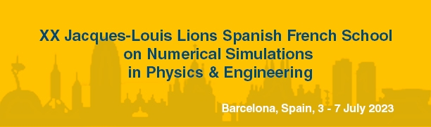
Durante los días 3 al 7 de julio de 2023 tuvo lugar al XX Escuela Jacques-Louis Lions Hispano-Francesa sobre simulación Numérica en Física e Ingeniería en las instalaciones del Campus Norte de la Universitat Politècnica de Catalunya en Barcelona.
Muchos problemas de física e ingeniería se caracterizan por fenómenos que involucran diferentes escalas, tanto espaciales como temporales. La descripción precisa y la simulación fiable de tales fenómenos implican grandes desafíos desde el punto de vista tanto de la modelización matemática como de la simulación numérica. La XX edición de la Escuela estuvo dedicada a dichos desafíos y tuvo como lema Mathematical and computational modelling across the scales. El enfoque temático fue amplio e incluyó contribuciones sobre modelado y métodos numéricos, para problemas directos e inversos, con aplicaciones que abarcan desde la propagación de ondas hasta materiales compuestos y fluidos complejos, desde la mecánica cuántica hasta simulaciones en biomatemática. La Escuela tuvo lugar en el Laboratori de Càlcul Numèric (LaCàN) de la Universitat Politècnica de Catalunya y el Centro Internacional de Métodos Numéricos en Ingeniería (CIMNE), bajo los auspicios de la Sociedad Española de Matemática Aplicada (SEMA) y la Société de Mathématiques Appliquées et Industrielles (SMAI).
La escuela contó con numerosos estudiantes de doctorado y becarios posdoctorales en matemáticas aplicadas e ingeniería computacional y también contó con un buen número de investigadores séniors interesados en este campo. Como en las anteriores ocasiones, el objetivo fundamental de las EHF es fortalecer la relación existente entre las comunidades de matemática aplicada española y francesa, así como abrir la participación a investigadores de otras disciplinas y países con el fin de fomentar el debate multidisciplinar y la difusión cruzada de ideas.
El comité organizador local de la XX EHF estuvo formado por los profesores:
Pedro Díez, Universitat Politècnica de Catalunya. CIMNE (España).
Matteo Giacomini, Universitat Politècnica de Catalunya. CIMNE (España).
Matteo Giacomini, (España). Universitat Politècnica de Catalunya, CIMNE.
Frédéric Lagoutière, (Francia). Université Claude Bernard Lyon 1.
Gladys Narbona-Reina, (España). Universidad de Sevilla.
Stéphanie Salmon, (Francia). Université de Reims..
 | 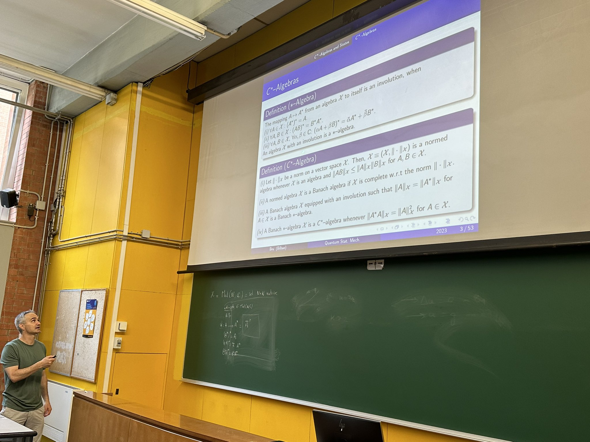 |
 | 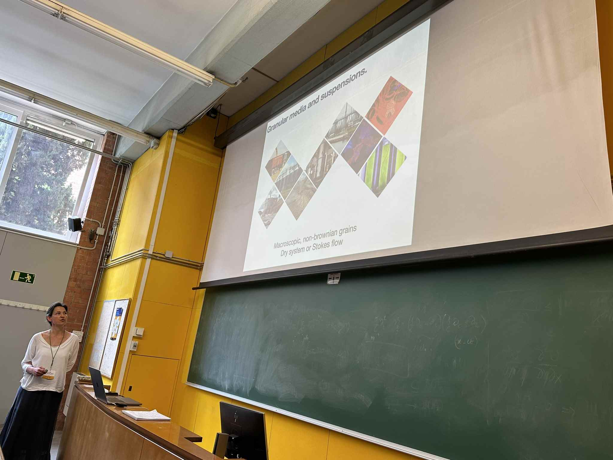 |


La XX EHF contó con cuatro cursos, tres conferencias plenarias y una sesión de pósteres dirigida a que los jóvenes investigadores participantes pudieran difundir sus trabajos. Como viene siendo habitual en las últimas EHF, se premió al póster más original tanto por su temática, como por las técnicas empleadas en el planteamiento del problema de modelización matemática y su resolución. En esta edición el póster elegido fue el elaborado por Dña. Laura Rinaldi de la Università Degli Studi di Padova de Padua, Italia, con el título Bread leavening and baking: a modelling challenge.
Como hemos dicho, la pasada edición contó con cuatro cursos impartidos por los profesores:
Hélène Barucq, Inria (Francia), que impartió el curso Advanced Numerical Methods for Probing Complex Objects.
Jean-Bernard Bru, Ikerbasque, UPV/EHU, BCAM (España), que impartió el curso C∗-Algebras and Mathematical Foundations of Quantum Statistical Mechanics.
Ana Carpio, Universidad Complutense de Madrid (España), que impartió el curso Uncertainty Quantification in Scientific Computing.
Aline Lefebvre-Lepot, CNRS, École Polytechnique (Francia) que impartió el curso From granular media to suspensions: taking contacts and close interactions into account.
Además de los cursos, también se impartieron tres conferencias plenarias a cargo de los profesores:
Ludovic Chamoin, ENS Paris-Saclay, Institut Universitaire de France (Francia), que impartió la conferencia titulada Data assimilation and integration into simulation models.
Laetitia Giraldi, Inria (Francia) que impartió la conferencia titulada Micro-swimmer’s Control: From a Computational Framework to the Optimization Process.
Estefanía Peña, Universidad de Zaragoza (España), que impartió la conferencia titulada Mathematical and numerical modelling of the mechanobiology of the atheroma plaque.
El material de los cursos (presentaciones y códigos) pueden descargarse de la página del programa de la XX EHF.
El acto de apertura de la XX EHF fue presidido por Prof. Dra. Esther Real, directora de la Escuela de Ingeniería Civil de la Universitat Politècnica de Catalunya, Prof. Dr. Pedro Díez, director científico del CIMNE y presidente del comité organizador local y el Prof. Dr. Manuel J. Castro Díaz, presidente de la SEMA.
Además de los cursos, conferencias plenarias y la sesión de pósteres, durante la XX EHF, se entregaron el premio SEMA «Antonio Valle» al joven investigador y el premio SEMA al mejor artículo del SEMA Jr. El Dr. Xavier Fernández-Real Girona, galardonado con el premio SEMA «Antonio Valle» al joven investigador impartió una charla titulada The fractional obstacle problem donde destacó algunas de sus contribuciones más relevantes y el Prof. Dr. Carlos Castro, galardonado con el premio SEMA al mejor artículo, impartió la charla titulada Load matrix recovery from scattering data in linear elasticity donde describía las bases del trabajo premiado así como algunos resultados recientes.
Además del programa científico, el programa de XX EHF se completó con un cóctel de bienvenida en la sede de la escuela y una cena de gala que tuvo lugar el 6 de julio en el restaurante Abrassame situado en las arenas en Barcelona donde pasamos una agradable velada con vistas al parque de Montjuïc.
 |  |
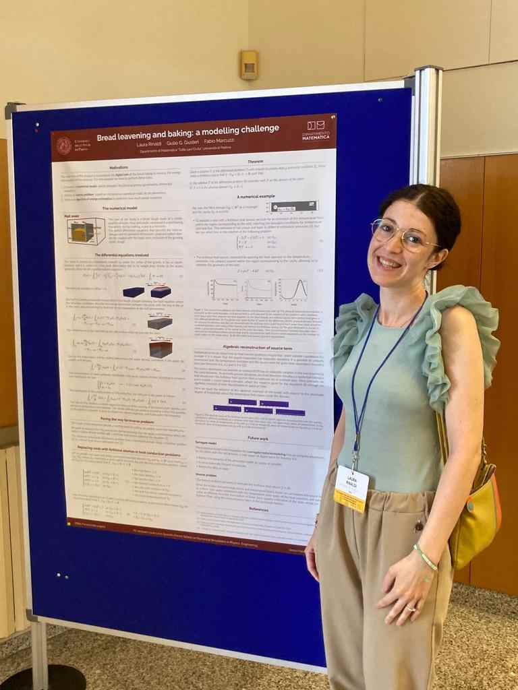
Como en ediciones anteriores, las actas de la escuela se publicarán en un volumen especial de la serie SEMA/SIMAI de Springer-Verlag.
| 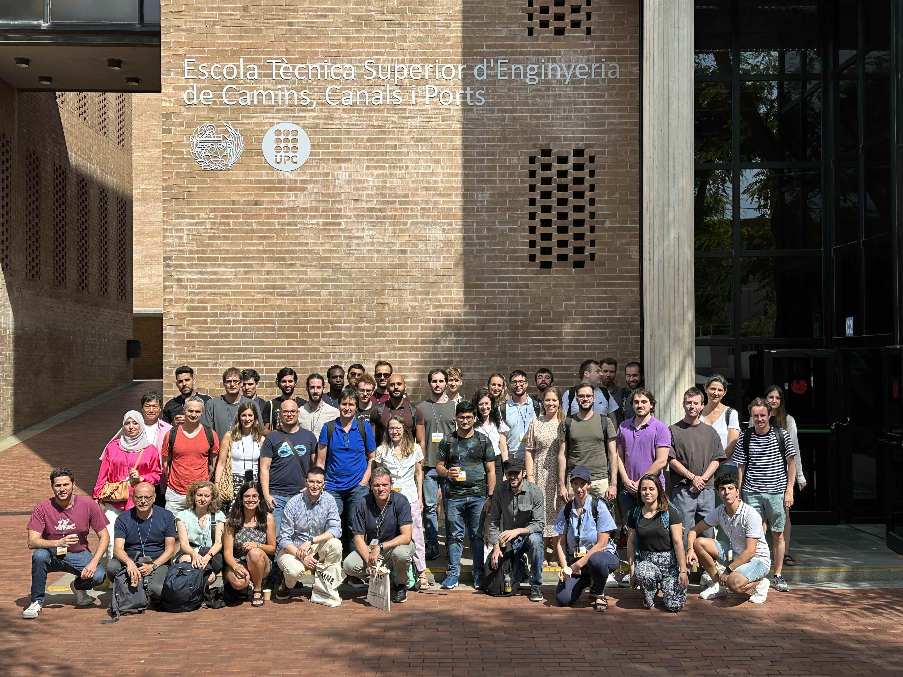 | 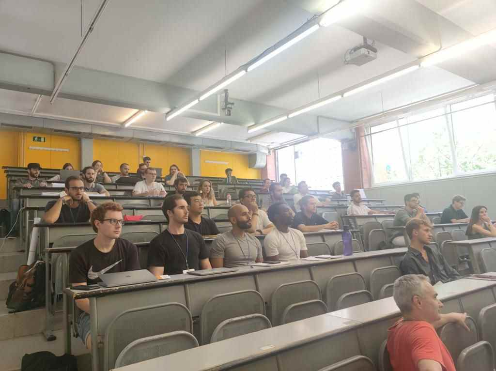 |
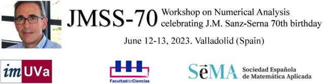
Con motivo del 70 cumpleaños de J. M. Sanz-Serna, los días 12 y 13 de junio de 2023 tuvo lugar en la Facultad de Ciencias de la Universidad de Valladolid un encuentro científico, como reconocimiento a su labor investigadora y a la huella que ésta ha dejado en el Departamento de Matemática Aplicada de dicha universidad. El principal objetivo de dicho encuentro era reunir en torno al homenajeado a un buen grupo de investigadores especializados en Análisis Numérico, que comparten el haber colaborado estrechamente con él en algún momento de su trayectoria científica, aunque estén dispersos por buena parte de la geografía española (Bilbao, Castellón, Madrid, San Sebastián, Sevilla, Valencia y, cómo no, Valladolid), y también en Coimbra, Edimburgo o Pekín. El encuentro permitió poner en común los resultados de investigación más recientes obtenidos por los distintos conferenciantes y propiciar que se puedan abrir nuevas vías de colaboración entre ellos.
El comité organizador del workshop estaba compuesto por I. Alonso, L. M. Abia, M. P. Calvo, B. Cano, A. Durán, J. de Frutos, V. Gatón, C. González y A. M. Portillo.
En el evento participaron los siguientes conferenciantes:
Alfonso Álamo,
Adérito Araújo (Universidade de Coimbra),
Sergio Blanes (Universidad Politécnica de Valencia),
M. P. Calvo (Universidad de Valladolid),
Begoña Cano (Universidad de Valladolid),
Cédric M. Campos (Universidad Rey Juan Carlos),
Fernando Casas (Universidad Jaume I),
Ángel Durán (Universidad de Valladolid),
Javier de Frutos (Universidad de Valladolid),
Bosco García-Archilla (Universidad de Sevilla),
Lorenzo Nagar (Basque Center for Applied Mathematics),
Ander Murua (Universidad del País Vasco UPV/EHU),
Ana M. Portillo (Universidad de Valladolid),
Luke Shaw (Universidad Jaume I),
Fernando Vadillo (Universidad del País Vasco UPV/EHU),
Beibei Zhu (University of Science and Technology Beijing),
Konstantinos Zygalakis (University of Edinburgh).
 |  |
En http://jmss70.uva.es/speakers/ puedes encontrar información sobre el título de las ponencias y de un breve resumen de las mismas. El programa del evento puede consultarse en http://jmss70.uva.es/program/.
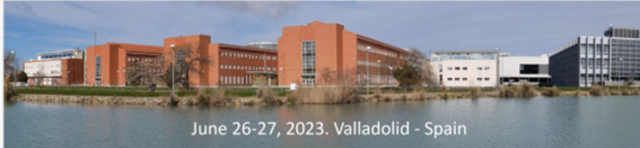
La relevancia en estos días de los fenómenos relacionados con la propagación de fluidos, bien desde un punto de vista experimental (mejor precisión en las observaciones) bien de análisis de riesgos (prevención de daños como consecuencia de fenómenos extremos) depende de una mejor comprensión de su dinámica, a través de su modelización matemática. En este sentido, el análisis y la aproximación numérica de ecuaciones en derivadas parciales son herramientas fundamentales. En torno a ellos tuvo lugar un encuentro científico los días 26 y 27 de junio de 2023 en la Facultad de Ciencias de la Universidad de Valladolid. Su principal objetivo fue reflejar la diversidad existente en la materia con la presentación de los más recientes resultados en la formulación, análisis teórico y tratamiento numérico de este tipo de problemas, por parte de investigadores nacionales e internacionales de reconocido prestigio y diferentes especialidades.
El comité organizador de estas jornadas estaba compuesto por
Ángel Castro (ICMAT),
Ángel Durán Martín (UVA),
Rafael Granero Belinchón (UC).
En el evento participaron los siguientes investigadores:
Sílvia Barbeiro (Universidade de Coimbra).
Miguel D. Bustamante (University College Dublin).
Ángel Castro (ICMAT).
Diego Córdoba (ICMAT).
Jezabel Curbelo (UPC).
Esteban Ferrer (UPM).
Rafael Granero-Belinchón (UC).
David Lannes (Université de Bordeaux).
Renato Lucà (BCAM).
María Medina de la Torre (UAM).
Tomás Morales (UMA).
Gulcin M. Muslu (Istanbul Technical University).
Jean-Claude Saut (Université Paris-Sud 11).
Leetha Saridaki (University of Athens).
Adélia Sequeira (IST Lisboa).
En http://mpf.uva.es/participants/ puedes encontrar información sobre el título de las ponencias y de un breve resumen de las mismas. El programa del evento puede consultarse en http://mpf.uva.es/program/
Teo Roldán Marrodán
Universidad Pública de Navarra
Entre el 13 y 18 de noviembre de 2023 se ha celebrado en Pamplona la exposición Matemáticas a pie de calle, fruto de una colaboración entre la Universidad Pública de Navarra (UPNA), el Instituto Universitario de Matemáticas y Aplicaciones (IUMA) de la Universidad de Zaragoza, el Museo de Matemáticas de Aragón, la Sociedad Española de Matemática Aplicada (SeMA) y la Real Sociedad Matemática Española (RSME). En la misma sede de la exposición (Salón Ansoleaga, Salesas, UPNA) han tenido lugar también conferencias impartidas por Raúl Ibáñez, Luis Rández, Isabel Cordero y Eduardo Saenz de Cabezón.
Durante su primera semana de apertura al público la exposición ha recibido la visita de centros escolares que han podido disfrutar de visitas guiadas realizadas por el profesor del Departamento de Estadística, Informática y Matemáticas de la UPNA Yeray Rodríguez. La exposición Matemáticas a pie de calle tendrá continuidad en enero de 2024 durante la celebración del Congreso Bienal de la Real Sociedad Matemática Española, que se celebrará en la Universidad Pública de Navarra.
El objetivo de la exposición Matemáticas a pie de calle ha sido acercar al público teoremas y curiosidades matemáticas desde el entretenimiento, el humor, el arte o la animación. Esto se puede iniciar en un programa de televisión, una viñeta humorística, un grabado o una animación. Así, en el apartado «Demostraciones matemáticas», la exposición presenta demostraciones animadas y manipulativas de resultados matemáticos como el cuadrado de la suma, el cubo de la suma o el teorema de Pitágoras. En «Viñetas matemáticas», hay creaciones con contenidos matemáticos de grandes dibujantes como Mingote, Forges, El Roto, o Alberto Montt. En el caso de «Humor matemático en series de animación», se muestran dieciséis situaciones particulares con contenido matemático que han aparecido en conocidas series de dibujos animados. Y finalmente, en «Secuencias matemáticas», se aportan tres videos matemáticos de series de televisión donde aparece esta ciencia como elemento central de la trama.
La exposición se ha completado con un ciclo de conferencias divulgativas sobre matemáticas. Así, Raúl Ibáñez, de la Universidad del País Vasco, impartió la charla «Las matemáticas en el taller del artista». Luis Rández, de la Universidad de Zaragoza, explicó las relaciones entre «Arte, urbanismo y astronomía». Isabel Cordero, de la Universidad de Valencia, fue la encargada de ofrecer «Matemáticas para codificar el Universo». Finalmente, Eduardo Sáenz de Cabezón, de la Universidad de La Rioja, nos asombró con su charla «El espejismo de la mayoría».
Todas estas actividades se han desarrollado en el marco de las Semanas de la Ciencia de la Universidad Pública de Navarra, al igual que la Jornada Doctoral Perspectivas de la Investigación en Matemáticas, organizadas por INAMAT2- Institute for Advanced Materials and Mathematics y BCAM.
La exposición Matemáticas a pie de calle tendrá continuidad en enero de 2024 durante la celebración del Congreso Bienal de la Real Sociedad Matemática Española, que se celebrará en la Universidad Pública de Navarra.
| 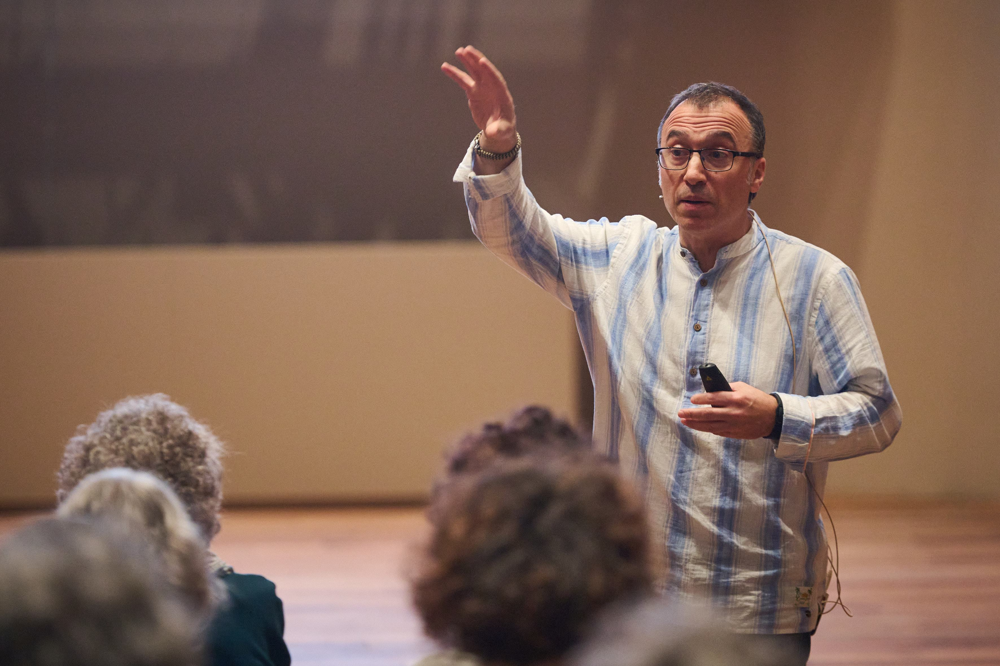
(a)
Prof.
Raúl
Ibáñez. |
| 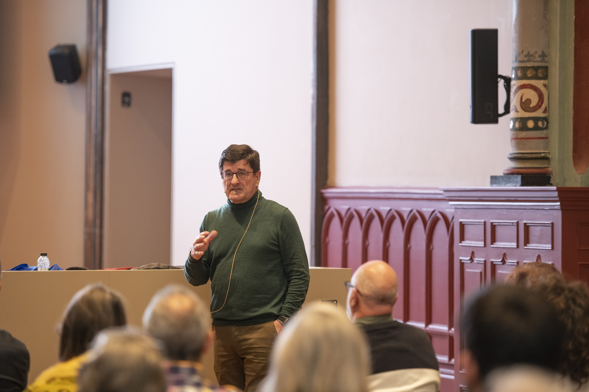
(b)
Prof.
Luis
Rández. |

(c)
Profa.
Isabel
Cordero. |

(d)
Prof.
Eduardo
Sáenz
de
Cabezón. |
 |
 |
| 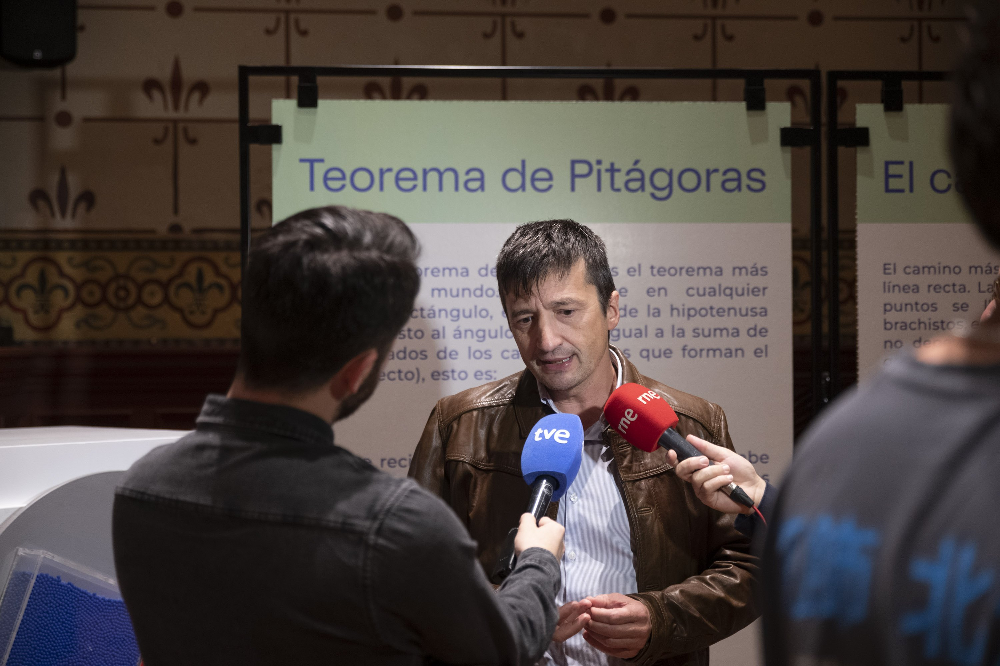 |
| 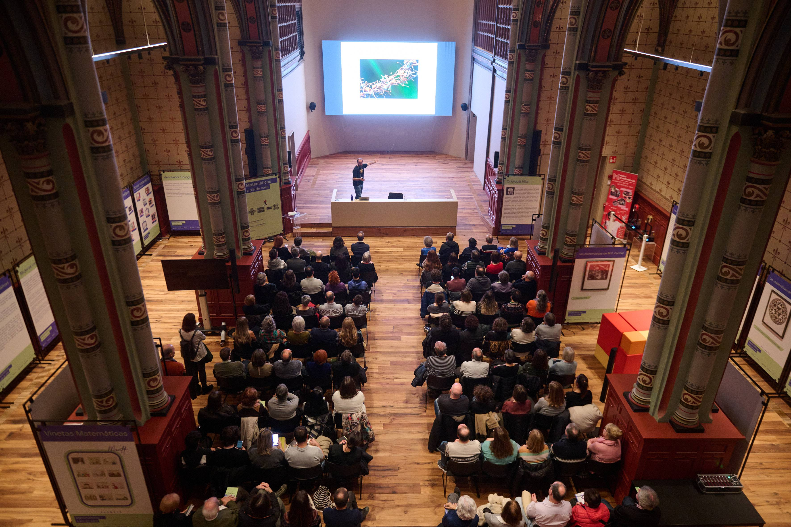 |
Durante los días 16 y 17 de noviembre de 2023 tuvo lugar en el Edificio de Investigación Ada Byron de la Universidad de Málaga el “Workshop on numerical approximation of hyperbolic PDEs in honor of Prof. Carlos Parés’ 60th birthday”. Este workshop se organizó con motivo del 60 cumpleaños de Carlos Parés Madroñal, fundador, junto al profesor Antonio Valle Sánchez, del grupo de investigación Ecuaciones Diferenciales, Análisis Numérico y Aplicaciones (EDANYA) de la Universidad de Málaga, con el fin de reconocer su labor investigadora y el impacto que ha tenido tanto en el grupo EDANYA, como en la comunidad de analistas numéricos de las ecuaciones en derivadas parciales hiperbólicas.
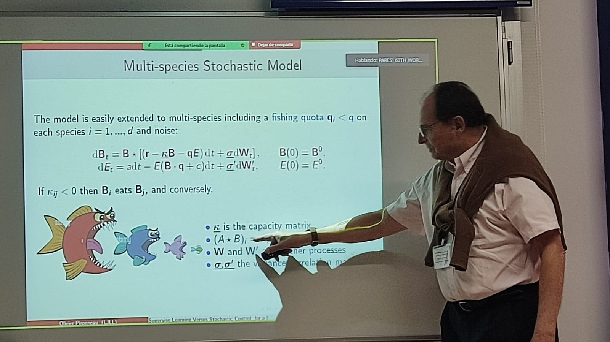 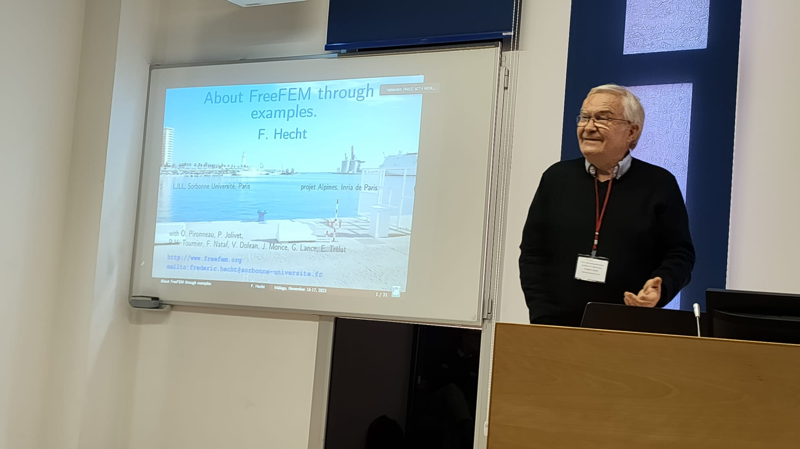
El principal objetivo de dicho encuentro era el de reunir en torno al homenajeado, en un ambiente distendido, a un buen grupo de investigadores que trabajan en el Análisis Numérico de las Ecuaciones en Derivadas Parciales y sus aplicaciones y que han colaborado estrechamente con Carlos en algún momento de su trayectoria científica. El evento contó con aproximadamente cuarenta participantes provenientes de diferentes universidades e instituciones: Universidad de Málaga, Universidad de Sevilla, Universitat de València, Universidad de A Coruña, Universidad Politécnica de Madrid, Università di Trento (Italia), Università di Catania (Italia), Sorbonne Université (Francia), Université Paris 13 (Francia), Université Versailles (Francia), Nantes Université (Francia), Université de Bordeaux (Francia), INRIA Bordeaux (Francia), University of Zurich (Suiza), ETH Zurich (Suiza), RWTH Aachen (Alemania), University of Würzburg (Alemania), Universidad de Guanajuato (México), ITESRC (México) y Universidade Federal de Mato Grosso do Sul (Brasil).
El comité organizador de estas jornadas estaba compuesto por los componentes del grupo EDANYA.
El evento contó con los siguientes conferenciantes invitados:
Rémi Agbrall (University of Zurich, Suiza).
Christophe Berthon (Nantes Université, Francia).
Manuel J. Castro (Universidad de Málaga, España).
Michael Dumbser (Università di Trento, Italia).
Enrique Fernández Nieto (Universidad de Sevilla, España).
Ana Ferreiro Ferreiro (Universidad de A Coruña, España).
José Antonio García Rodríguez (Universidad de A Coruña, España).
Frédéric Hecht (Sorbonne Université, Francia).
Arturo Hidalgo López (Universidad Politécnica de Madrid, España).
Christian Klingenberg (University of Würzburg, Alemania).
Philippe G. LeFloch (Sorbonne Université, Francia).
Raphaèl Loubère (Université de Bordeaux, Francia).
Emanuele Macca (Università di Catania, Italia).
Siddhartha Mishra (ETH Zurich, Suiza).
Pep Mulet (Universitat de València, España).
Lucas Müller (Università di Trento, Italia).
Olivier Pironneau (Sorbonne Université Pierre, Francia).
Mario Ricchiuto (INRIA Bordeaux, Francia).
Giovanni Russo (Università di Catania, Italia).
Eleuterio F. Toro (Università di Trento, Italia).
Carlos Vázquez Cendón (Universidad de A Coruña, España).
En https://edanya.uma.es/pares60/index.php/participants se puede encontrar información sobre los participantes del evento. El programa puede consultarse en https://edanya.uma.es/pares60/index.php/schedule, así como el título de las ponencias y un breve resumen de las mismas.
Está previsto que algunos de los resultados presentados en estas jornadas se recojan en artículos publicados en un número especial de SEMA Journal.
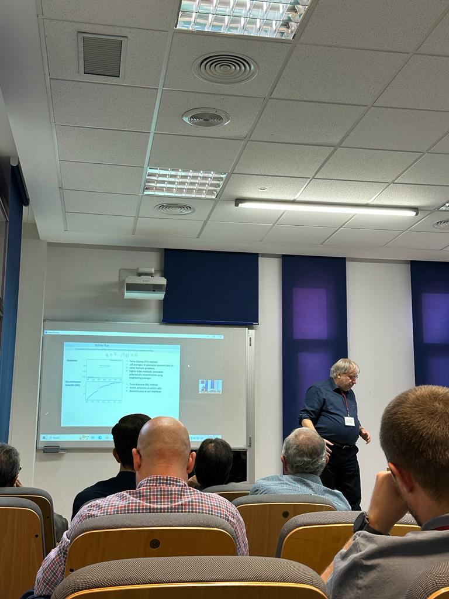 
El encuentro permitió poner en común los resultados de investigación más recientes obtenidos por los participantes y reforzar la colaboración existente entre ellos. Además de las dos jornadas científicas, el evento también contó con dos actos sociales: una cena de gala en la noche del jueves y una visita guiada por el centro de Málaga en la tarde del viernes, que finalizó con la degustación de un vino español. Estos actos contaron, además, con la participación de los familiares más cercanos del profesor Parés.
 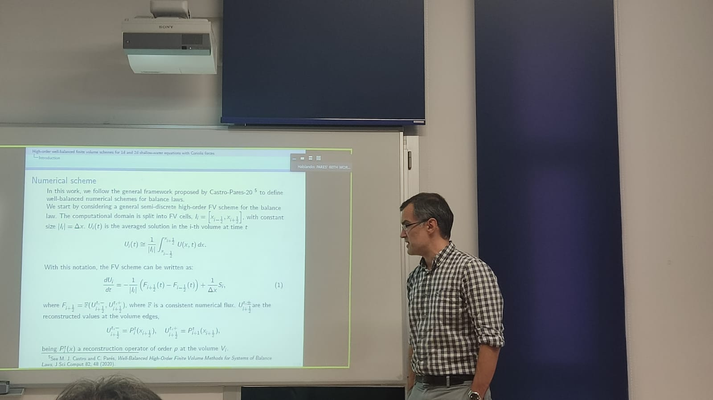
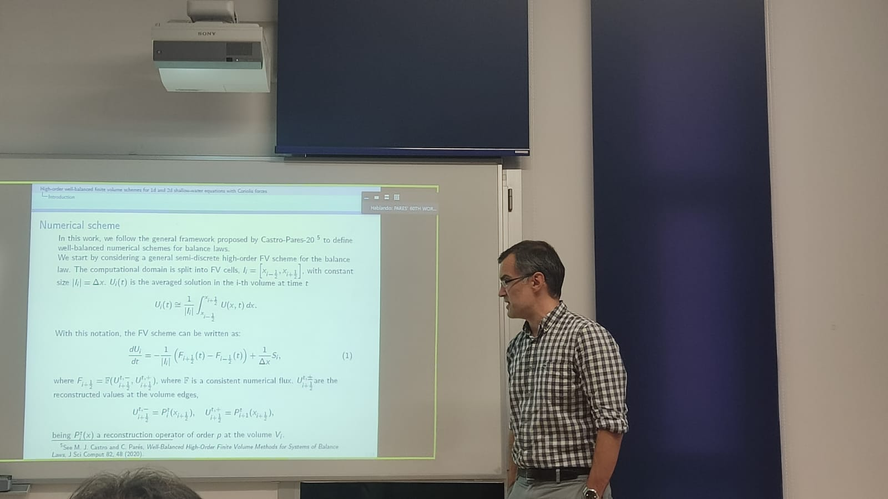
 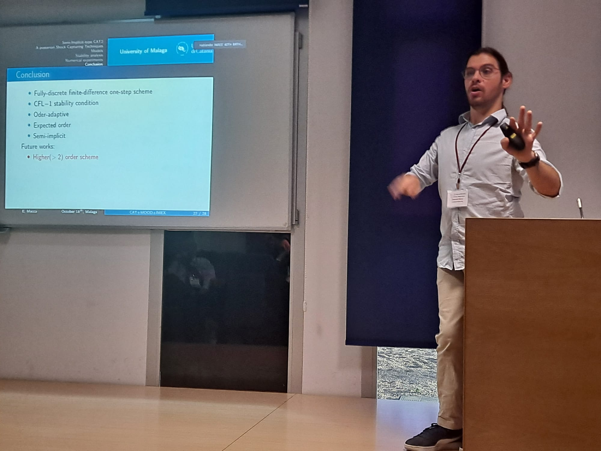
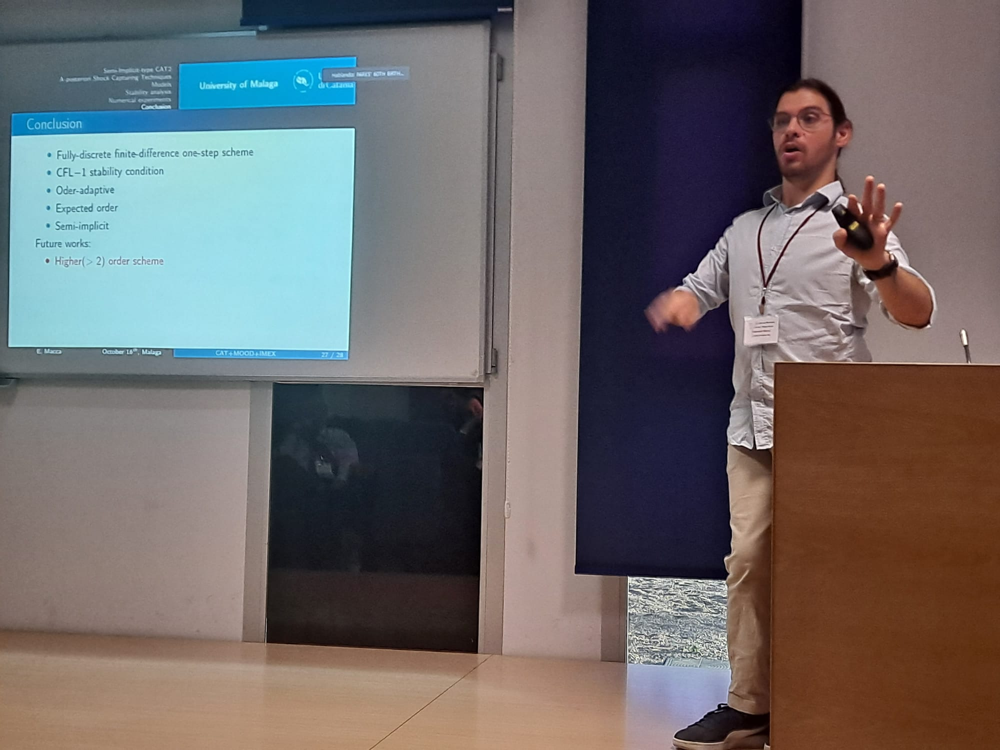
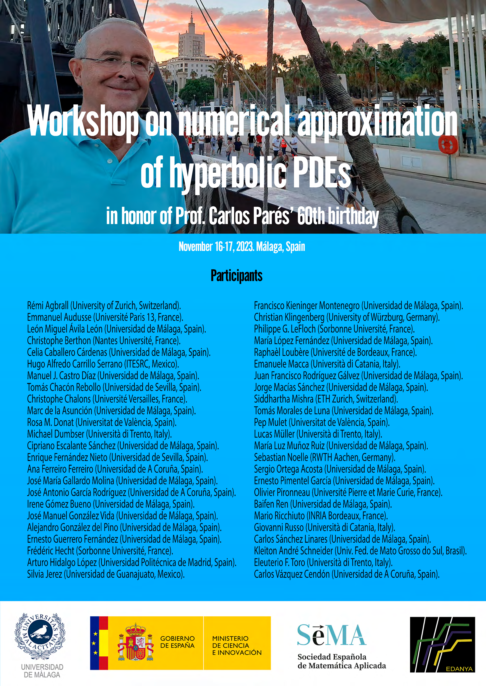


 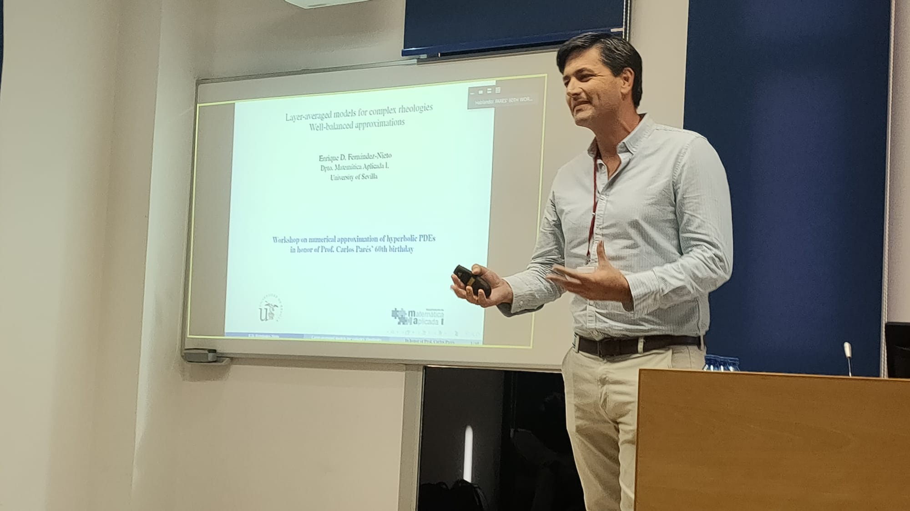
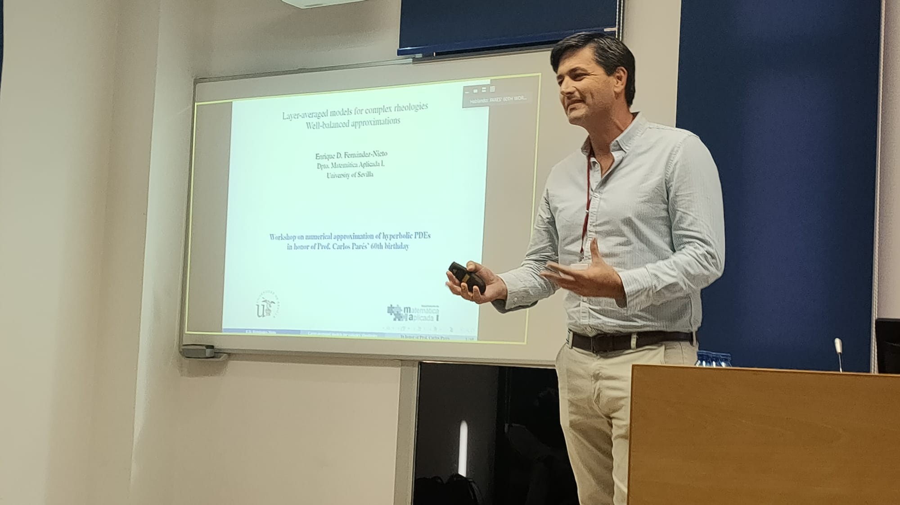